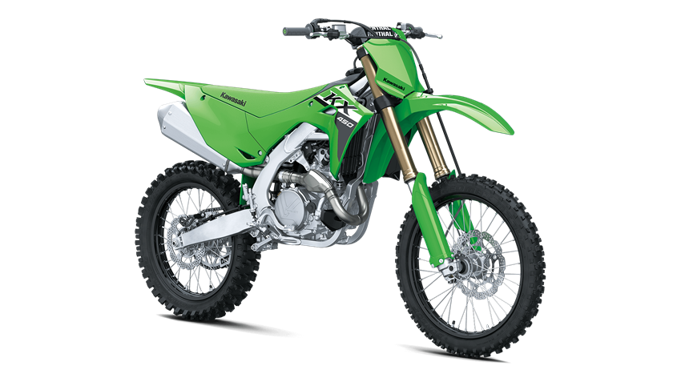

LISTA DE LAS 3 MEJORES MOTOS.
- Kawasaki Ninja H2. R
- Kawasaki Z125.
-Kawasaki Ninja ZX.¿lOCO POR UNA DEPORTIVA?
KAWASAKI Z1000:$72.990.000.COP
Precio mencionado sujeto a cambios sin previo aviso.
La Kawasaki Z1000 entrega una potencia de 142 CV a 10.000 rpm con un par motor máximo de 111 Nm a 7.300 rpm gracias a sus 1.43 cc. Otro de las áreas que ha recibido mejoras ha sido el sistema de escape, con revisión de los catalizadores principales y los precatalizadores.
KAWASAKI KX450F:$30.990.000.COP
Precio mencionado sujeto a cambios sin previo aviso.

El KX450 alcanza un máximo de 56.9 caballos a 9500 rpm. Eso no suena tan mal, pero el Yamaha YZ2022F 450 alcanza un máximo de 58.5 caballos de fuerza.
¿QUE TAL LOS MOTORES 2 TIEMPOS?
KAWASAKI VICTOR S 150:$19.990.000.COP
Precio mencionado sujeto a cambios sin previo aviso.
Les presento esta motocicleta, una verdadera nave que con tan solo 150cc, un potente motor 2t y 34cv a 9500rpm refrigerada por agua, que alcanza una velocidad crucero de 120 kmh y una velocidad maxima de 170km/h(Estandar). Con modificaciones puede llegar hasta 210km/h. Es una belleza Se carateriza por su freno de disco en las 2 ruedas.